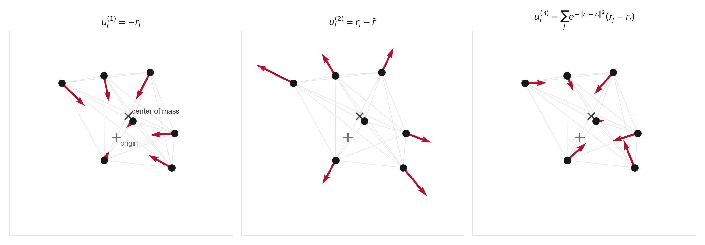

Concepts you need
- The transformation laws you wrote in Problem 1, parts 4 and 6
- Rotation and permutation matrices acting on point clouds
- Center of mass and why translation symmetry forces mean-zero updates
- Fractional coordinates, wrapping modulo one, and the minimum-image convention
If you get stuck
- DMol Chapter 10 for equivariance tests written as equations you can translate into asserts
- Equivariant Flows for why the center of mass must be handled explicitly
- Periodic boundary conditions for the minimum-image distance in part 7
Source note. Original lab, motivated by Equivariant Flows, E(3)-equivariant diffusion, and CDVAE-style crystal models with periodic boundaries.
This lab turns physical symmetry into executable tests. The goal is to make students skeptical of vague claims like "the model is equivariant" unless the transformation laws have actually been checked.
For a molecular configuration \(R\in\mathbb R^{n\times 3}\), implement three candidate velocity fields:
\[
u_i^{(1)}(R)=-r_i,
\qquad
u_i^{(2)}(R)=r_i-\bar r,
\qquad
u_i^{(3)}(R)=\sum_{j\neq i}\exp(-\|r_i-r_j\|^2)(r_j-r_i),
\]
where \(\bar r=n^{-1}\sum_i r_i\).

- Write numerical tests for translation equivariance, rotation equivariance, permutation equivariance among identical atoms, and center-of-mass preservation.
- Create a table showing which candidate fields pass which tests. Explain any failures in words.
- Explain why any field of the form \(u_i(R)=\sum_{j\neq i}\phi(\|r_i-r_j\|)\,(r_j-r_i)\) is automatically translation, rotation, and permutation equivariant. This one-line recipe, scalar functions of invariants multiplying difference vectors, is the core trick behind the E(3)-equivariant architectures of Week 10.
- For the best-behaved field, integrate a small point cloud and plot the motion of the points. Does the center of mass move?
- Make equivariance visible. Integrate trajectories from an initial cloud \(R_0\) and from a rotated copy \(QR_0\), then apply \(Q^{-1}\) to the second set of trajectories and overlay the two families. For an equivariant field the curves coincide to solver tolerance. Repeat with a non-equivariant candidate and watch them split apart. Save both figures. This overlay is the most honest equivariance test you will see all course.
- Now switch to a toy 2D periodic cell with fractional coordinates \(x\in[0,1)^2\). Integrate the periodic velocity field \[ u(x)=\begin{pmatrix} \sin(2\pi x_1)\cos(2\pi x_2)\\ -\cos(2\pi x_1)\sin(2\pi x_2) \end{pmatrix} \] while wrapping coordinates modulo one. Plot the field as a streamplot over the unit cell and overlay one long trajectory drawn wrapped. The jumps across the cell boundary are not plotting errors, they are the geometry.
- Compare wrapped and unwrapped integration. Explain why Euclidean distance is misleading near a periodic boundary and implement a minimum-image distance. Visualize the failure. For a reference point near a cell corner, plot Euclidean distance and minimum-image distance over the whole cell as two heatmaps. The seam in the first picture is exactly what a model using naive distances feels.
Deliverable. The pass/fail test table, the trajectory-overlay equivariance figures for one passing and one failing field, the torus streamplot with a wrapped trajectory, and the pair of distance heatmaps.
Why this matters. This is the first explicitly AI4Chem and materials lab. It previews why later models need E(3)-equivariant architectures, atom-type handling, fractional coordinates, lattice variables, and periodic boundary conditions.